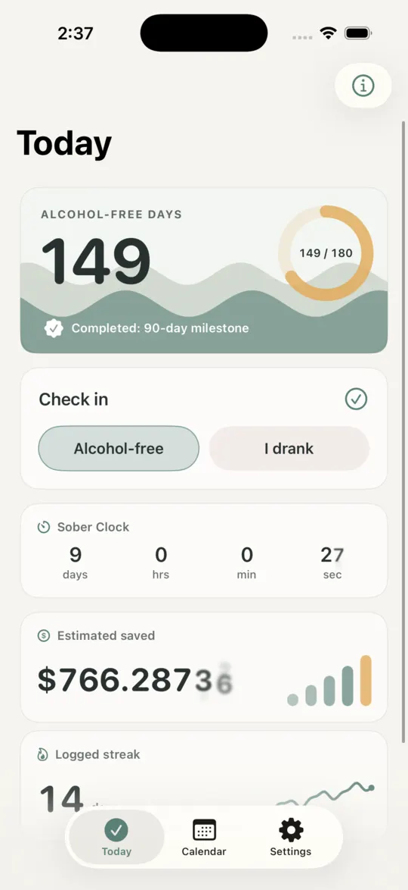
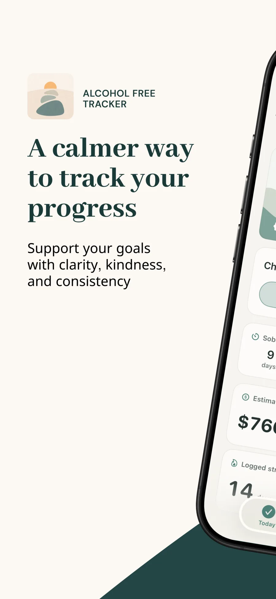
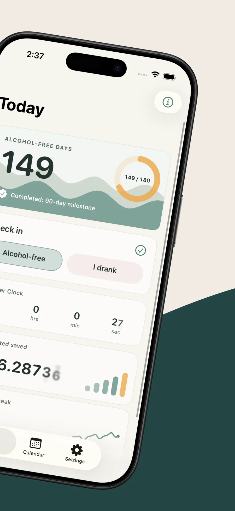
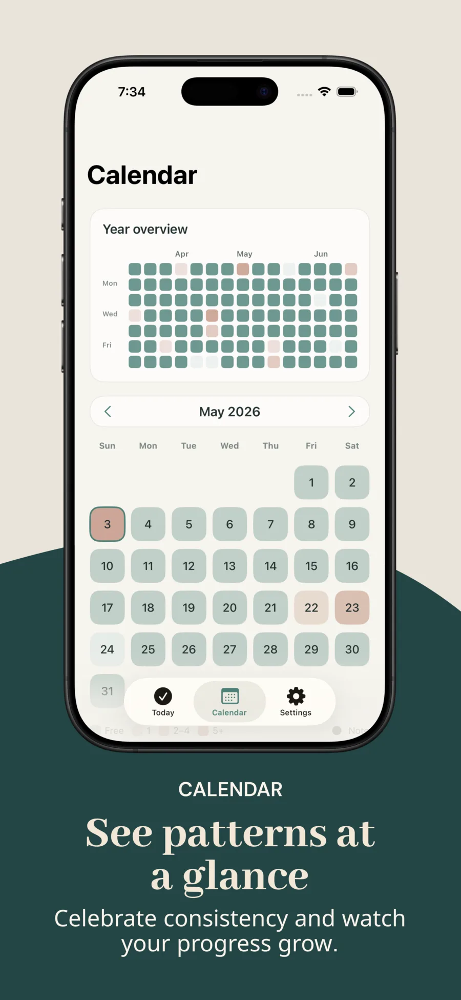
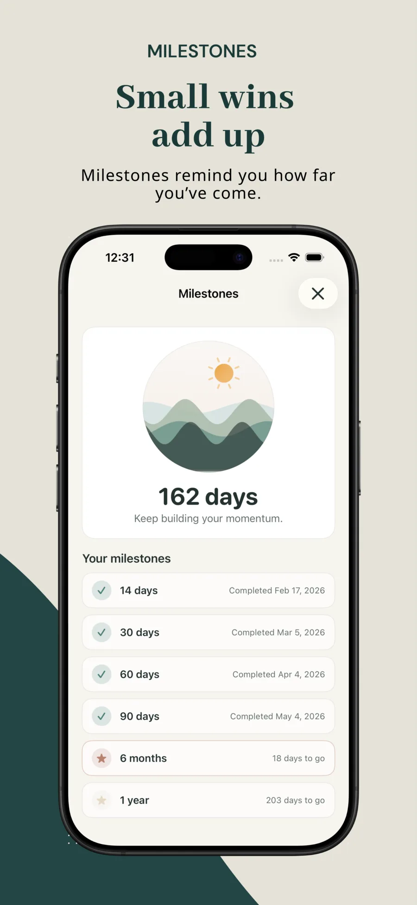
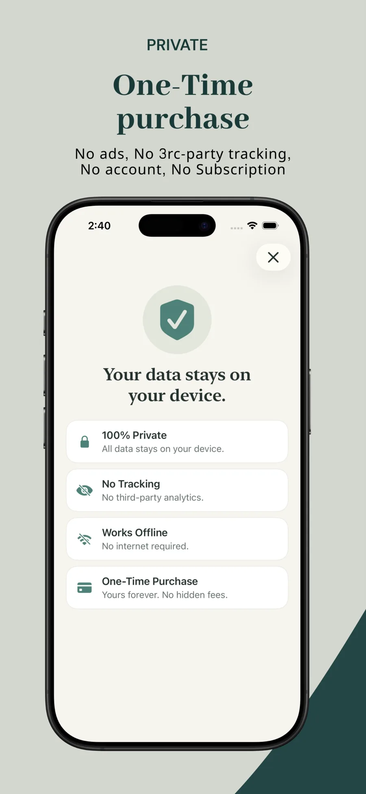
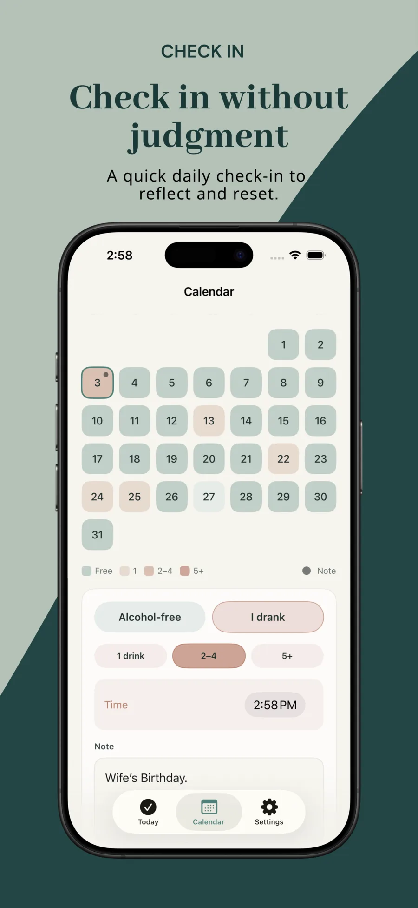
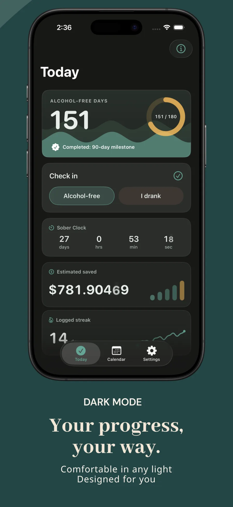
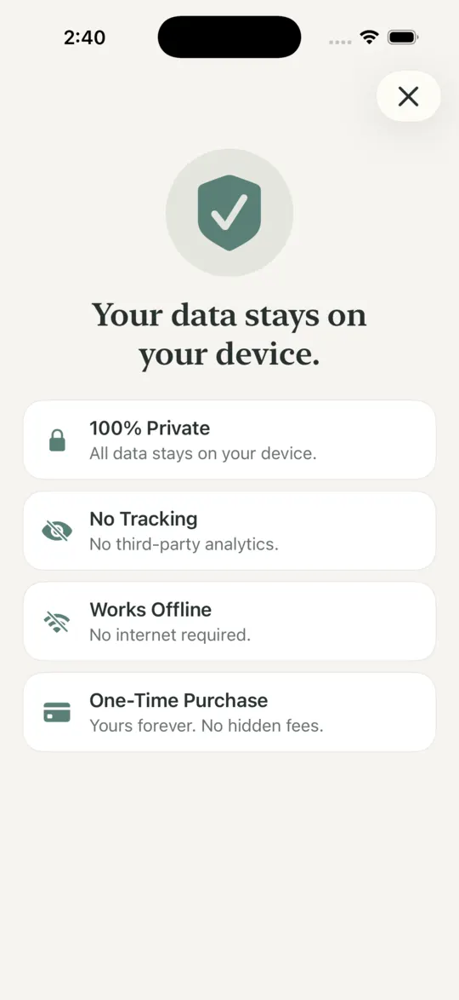

Check in without judgment
Mark an alcohol-free day or record a broad drink level. Add time and a private note only when the context helps.
Private progress. No pressure.
Support your alcohol-free or mindful-drinking goals with a quick daily check-in, clear patterns, and milestones that encourage you without judging you.
For iPhone and iPad · One-time purchase · No subscription

A tracker, not a judge
No feeds, public profiles, coaching scripts, or streak-shaming. Just thoughtful tools that make progress easier to notice.
Mark an alcohol-free day or record a broad drink level. Add time and a private note only when the context helps.
Move between monthly and yearly views to notice consistency, drinking patterns, and the days that deserve reflection.
Follow total days, sober time, logged streaks, savings estimates, and milestones without turning them into pressure.
Use the app offline and create a portable backup when you choose. No account is required to begin or continue.
The app at a glance
Explore the full App Store story. Swipe or scroll to move through the screens.







Private by design
Alcohol Free Tracker works without an account or network connection. Your profile, check-ins, notes, and drinking history stay on your device.

For iPhone and iPad
Track honestly, notice patterns, and keep moving—privately, without a subscription.
Support
Find quick answers here or send an email if you need a hand.
Quick answers
Your profile, check-ins, drink levels, times, and notes are stored locally on your device. The current version does not upload this tracker data to the developer.
No. Alcohol Free Tracker works without registration, login, or a network connection.
Open Settings, choose Export, and select where to save the JSON file. To restore it, choose Import and confirm that you want to replace the current local data.
You can remove individual check-ins in the app. Deleting the app removes its local app container, subject to any Apple device backup or exported JSON copy you created.
No. The app is a self-directed tracking tool, not medical advice, diagnosis, treatment, counseling, or emergency support.